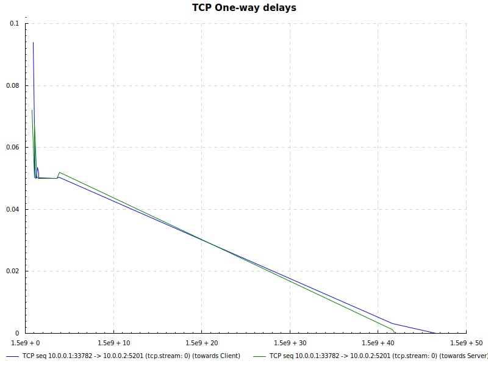

mptcpanalyzer has a unique capability (at least in the FOSS world, to the best of my knowledge) where it is capable of mapping packets from 2 pcaps (server and client) together. Considering the clocks at both hosts are syntonized/in sync, one can deduce properties like one-way delays (OWD), also called one-trip time (OTT), to match the Round-Trip time (RTT) expression.
> map-tcp examples/client_2_filtered.pcapng examples/server_2_filtered.pcapng 0
Score for connection 10.0.0.1:33782 -> 10.0.0.2:5201 (tcp.stream: 0): 40
Score for connection 10.0.0.1:33784 -> 10.0.0.2:5201 (tcp.stream: 1): 30
Score for connection 10.0.0.1:54595 -> 11.0.0.2:5201 (tcp.stream: 2): 20
Score for connection 10.0.0.1:57491 -> 11.0.0.2:5201 (tcp.stream: 3): 20
Score for connection 11.0.0.1:35589 -> 10.0.0.2:5201 (tcp.stream: 6): 20
Score for connection 11.0.0.1:50007 -> 10.0.0.2:5201 (tcp.stream: 7): 20
Score for connection 11.0.0.1:50077 -> 11.0.0.2:5201 (tcp.stream: 5): 10
Couldn't compute score for tcp.stream "No packet with any SYN flag for tcp.stream StreamId 4"Similar with MPTCP, mptcpanalyzer will compute a score and displays the possible mappings in decreasing order
map-mptcp examples/client_2_filtered.pcapng examples/server_2_filtered.pcapng 0
Score for connection StreamId 0: 200
Server key/token: 10048458395084872514/2846245513
Client key/token: 17227928701987094984/4093186044
Subflows:
10.0.0.1:33782 -> 10.0.0.2:5201 (tcp.stream: 0)
10.0.0.1:54595 -> 11.0.0.2:5201 (tcp.stream: 2)
11.0.0.1:35589 -> 10.0.0.2:5201 (tcp.stream: 6)
Score for connection StreamId 1: 0
Server key/token: 14803550490012999960/1015310287
Client key/token: 2708191410426849018/3188734930
Subflows:
10.0.0.1:33784 -> 10.0.0.2:5201 (tcp.stream: 1)
10.0.0.1:57491 -> 11.0.0.2:5201 (tcp.stream: 3)
11.0.0.1:50007 -> 10.0.0.2:5201 (tcp.stream: 7)
11.0.0.1:50077 -> 11.0.0.2:5201 (tcp.stream: 5)Once
plot-tcp --display owd examples/client_2_filtered.pcapng 0 examples/server_2_filtered.pcapng 0which produces: 
Same can be done for MPTCP with:
plot-mptcp --display owd examples/client_2_filtered.pcapng 0 examples/server_2_filtered.pcapng 0